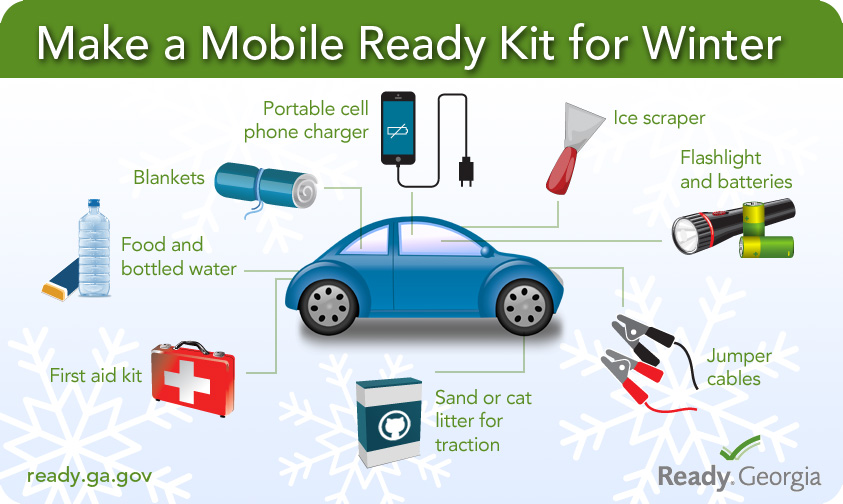

Winter Storm?
 When you are driving in winter conditions you need to know what to do, here are 10 things you need to know if you want to make it to your destination in this kind of weather. Enjoying pumpkin-spiced lattes, the colors of the leaves and those refreshingly crisp autumn afternoons? Well, we hate to brrr-eak it to you, but that means winter is, er, on its way — and the inevitable cold weather that comes along with it is going to be here even sooner than the official December solstice. Unless you telecommute, you'll have to face the freeze to get to work or school or wherever, and your car's not gonna like it much more than you do. From dead batteries to getting stuck in the snow to breaking down in the middle of nowhere amid subzero mercury readings, winter weather throws some chilling challenges at motorists. But with a little preparation, you can avoid trouble — or at least know how to deal with it when you can't.